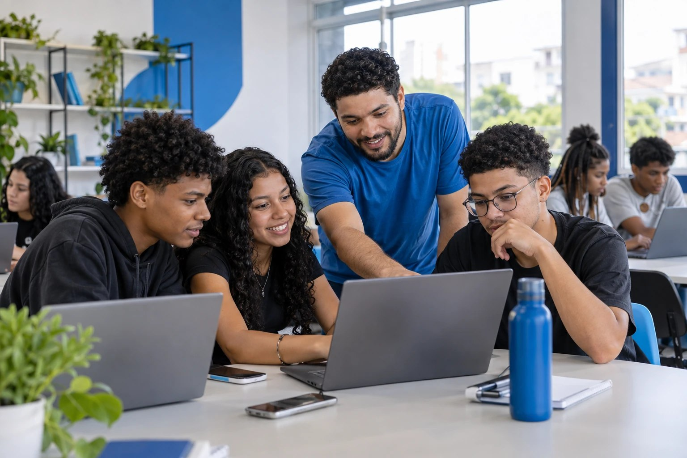
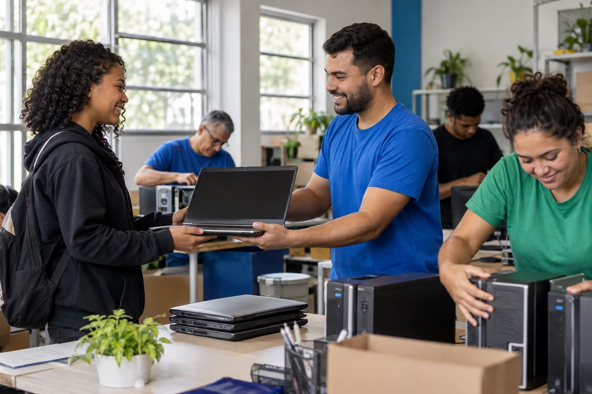
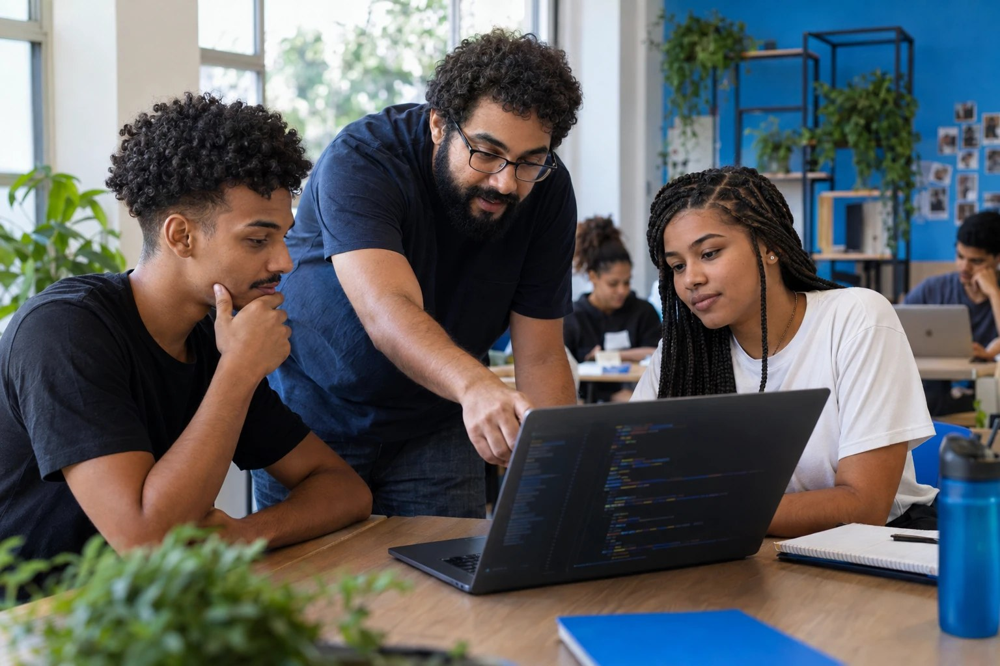
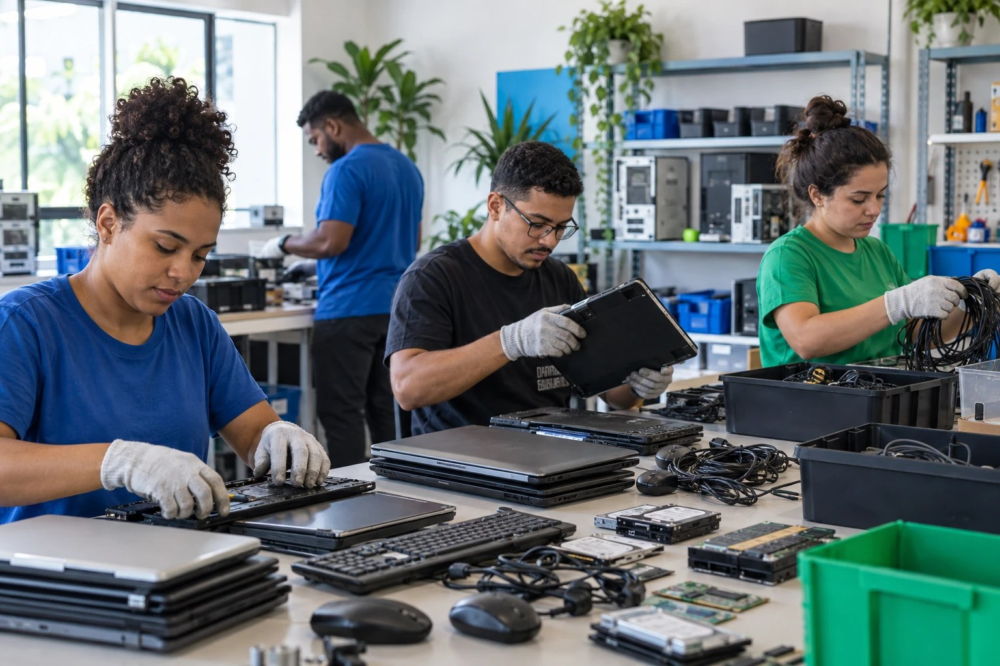

Projetos sociais
Conheça as iniciativas que levam formação, equipamentos e orientação para quem deseja ampliar suas oportunidades por meio da tecnologia.
Iniciativas da Ponte Digital
Conecta Jovem

Oficinas gratuitas de informática, internet segura, programação básica e competências digitais para a vida acadêmica e profissional.
Objetivo
Desenvolver autonomia e confiança no uso consciente da tecnologia.
Público beneficiado
Jovens e estudantes com pouco acesso à formação digital.
PC para Todos

Arrecadamos, recuperamos e doamos computadores e notebooks usados para estudantes e famílias que precisam de acesso à tecnologia.
Objetivo
Reduzir a desigualdade de acesso a equipamentos essenciais para estudo, trabalho e serviços digitais.
Público beneficiado
Estudantes, famílias de baixa renda e pessoas sem computador em casa.
Mentoria Tech

Profissionais voluntários orientam jovens sobre tecnologia, carreira, currículo, GitHub e entrada no mercado de trabalho.
Objetivo
Aproximar talentos de referências profissionais e caminhos possíveis para o setor de tecnologia.
Público beneficiado
Jovens em formação e pessoas em transição de carreira.
Descarte Consciente

Recebemos equipamentos eletrônicos sem uso para reaproveitamento, reciclagem ou descarte ambientalmente responsável.
Objetivo
Dar uma destinação segura aos resíduos eletrônicos e ampliar o reaproveitamento de equipamentos.
Público beneficiado
Comunidades atendidas, doadores e o meio ambiente.